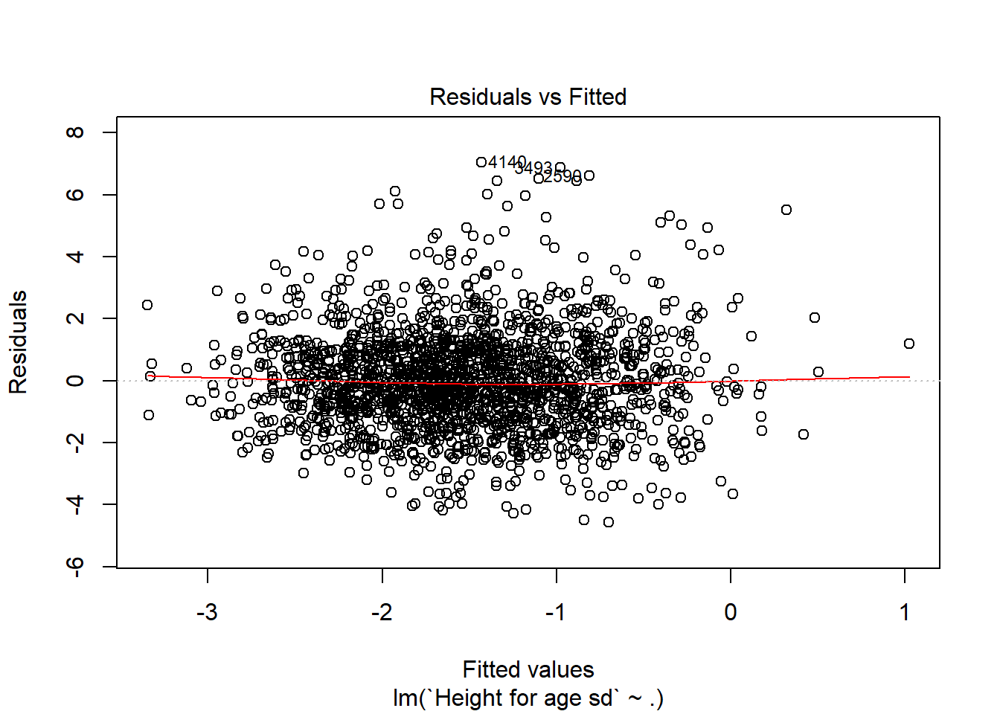

Model Selection in High Dimensions
Maria-Pia Victoria-Feser (professor), Cesare Miglioli and Guillaume Blanc (teaching assistants)
2018-03-09
1 Introduction
1.1 Read this part first
Anyone is invited to use any part of this eBook as long as credit is given. To cite this book, please use:
- Victoria-Feser, M.-P. (2018). A Lecture in Model Selection in High Dimensions, Research Center for Statistics, GSEM, University of Geneva, Switzerland.
If you use this eBook as a reference for a course, please inform the author.
(maria-pia.victoriafeser@unige.ch).
The content of this eBook is dynamic and changes as the lectures take place. Students participating to the classes can contribute to the content, with for example the analysis of real data sets, the resolution of exercises, simulations to explore methods in particular settings, etc. Their contribution is acknowledge where it is due.
The first acknowledgements go to Cesare Miglioli and Guillaume Blanc, Ph. D. Students and the Research Center for Statistics, University of Geneva, for their invaluable contribution in setting up the first version of this eBook.
1.2 Content choice and structure
The content of this e-book is intended for graduate and doctoral students in statistics and related fields interested in the statistical approach of model selection in high dimensions.
Model selection in high dimensions is an active subject of research, ranging from machine learning and/or artificial intelligence algorithms, to statistical inference, and sometimes a mix of the two. We focus on the frequentist approach to model selection in view of presenting methods that have the necessary properties for out-of-sample (or population) validity, within an as large as possible theoretical framework that enables the measurement of different aspects of the validity concept. We therefore anchor the content into an inferential statistics approach, essentially for causal models.
More specifically, the focus of model selection in high dimensions is presented into two main headings, one on statistical methods or criteria for measuring the statistical validity, and the other one on fast algorithms in high dimensional settings, both in the number of observation and in the number of inputs, that avoid the simultaneous comparison of all possible models.
Even within this focus, the set of available methods is still very rich, so that only a selection of the available methods is presented.
Each presentation is accompanied with practical exercises using R. We highly recommend downloading RStudio’s IDE which is an ideal working environment for statistical analyses.
1.2.1 Bibliography
(to be completed)
- Computer Age Statistical Inference: Algorithms, Evidence, and Data Science. Bradley Efron & Trevor Hastie, Cambridge University Press, 2016.
https://web.stanford.edu/~hastie/CASI_files/PDF/casi.pdf
- An Introduction to Statistical Learning: with Applications in R. Gareth James, Daniela Witten, Trevor Hastie & Robert Tibshirani, Springer, 2013.
http://www-bcf.usc.edu/~gareth/ISL/ISLR%20First%20Printing.pdf
- The Elements of Statistical Learning: Data Mining, Inference, and Prediction. Trevor Hastie, Robert Tibshirani & Jerome Friedman, Springer, 2009.
https://web.stanford.edu/~hastie/ElemStatLearn/printings/ESLII_print12.pdf
Model selection and model averaging. Gerda Claeskens and Nils Lid Hjort, Cambridge University Press, 2008.
Regression and Time Series Model Selection. Allan D R McQuarrie and Chih-Ling Tsai, World Scientific, 1998.
1.2.2 Useful links
(to be completed)
- Chamilo (Search for Model Selection in High Dimensions to register)
- Github repository of the course
- R project
- R Studio
- An Introduction to Statistical Programming Methods with R
- GitHub
- UCI repository for datasets
- Database definition
- Data Wrangling cheatsheet
- Malnutrition in Zambia, p. 64
- Course Datasets - Malnutrition in Zambia
- American Cancer Association on Leukemia prognostic factors
- Data on Leukemia in Children
- quantmod package in R
- Theil inequality index
- Deep Learning
- Alzeihmer data
1.3 Using R
There are many available classes, textbooks, e-books, etc. on how to get acquainted with a quite sophisticated usage of the most commonly used statistical software R. The choice of the R editor depends on how R is used and for this class, we propose the open source editor RStudio. We also highly recommend the introduction proposed in SMAC, which will constitute the basic knowledge from which this class starts.
1.3.1 Useful R packages
The R packages that will be used throughout this class are the following (to be completed):
- rmarkdown
- quantmod
- plotly
- tidyr
- dplyr
- RODBC
- pool
- RMySQL
- foreign
- leaps
- glmulti
- MuMIn
- caret
- mvtnorm
- MASS
- tictoc
- pROC
- glmnet
To install a package, use the R command install.packages("chosen.package.name") (see also https://cran.r-project.org/web/packages/). Visit the CRAN R project to get useful information about all the available R packages (https://cran.r-project.org/web/packages/available_packages_by_name.html)
To install all packages at once, run the following code with administrator rights.
packages.required <- c("rmarkdown", "quantmod", "plotly", "tidyr", "dplyr", "RODBC", "pool", "RMySQL",
"foreign", "leaps", "glmulti", "MuMIn", "caret","mvtnorm", "MASS", "tictoc","pROC","glmnet")
packages.missing <- packages.required[!(packages.required %in% rownames(installed.packages()))]
if(length(packages.missing)!=0) install.packages(packages.missing)1.3.2 Managing Data
(by G. Blanc)
Data are nowadays continuously produced and readily available from internet platforms. This has become necessary since very often personal computer memory is not sufficient to store (high dimensional) data locally. It is therefore important to be able to import data into R for data analysis in an (almost) automatic fashion.
Colloquially, `loading’ a dataset means storing it into your computer’s Random-Access-Memory (RAM), which allows for a fast access of the CPU to the data. The RAM is extremely fast1, but is typically of limited amount compared to what can be stored in a hard-drive or a SSD (usually 4 to 16 Gbs in a typical consumer-grade computer). The data stored in your computer’s RAM is called volatile: the information it contains will disappear once the computer is shut down. This is the reason why the datasets must be loaded into R at the beginning of each session.
In this section, you will learn different ways to load the data that you may encounter in the future, depending on the context and the size of the databases: from an R package, from a local data file, from an online data file, and from an online database. In this latter case, datasets are obtained by way of SQL queries via a remote connection.
Follow along and load all the datasets as in the text: they will be used for the following exercises.
1.3.3 Loading data from an R package
(by G. Blanc)
Some packages have their own data included, and R-base indeed includes a well known selection, for instance the iris dataset. You can load it using:
# Load the iris dataset
iris <- irisand display its structure with:
# Display iris' structure
str(iris)## 'data.frame': 150 obs. of 5 variables:
## $ Sepal.Length: num 5.1 4.9 4.7 4.6 5 5.4 4.6 5 4.4 4.9 ...
## $ Sepal.Width : num 3.5 3 3.2 3.1 3.6 3.9 3.4 3.4 2.9 3.1 ...
## $ Petal.Length: num 1.4 1.4 1.3 1.5 1.4 1.7 1.4 1.5 1.4 1.5 ...
## $ Petal.Width : num 0.2 0.2 0.2 0.2 0.2 0.4 0.3 0.2 0.2 0.1 ...
## $ Species : Factor w/ 3 levels "setosa","versicolor",..: 1 1 1 1 1 1 1 1 1 1 ...The dataset iris is now ready for analysis.
1.3.4 Loading data from a local file
(by G. Blanc)
Typical file formats include .txt and .csv, or .data. Download the file wine.data from http://archive.ics.uci.edu/ml/machine-learning-databases/wine/ to a folder on your computer, say in ./datasets/.
You can load the data using the read.table function, which takes as further input sep = "," to indicate that the variables in each line are separated by a comma. These variables will be organized as columns in the dataset.Every line of the file becomes a row in the dataset.
wine <- read.table("./datasets/wine.data", sep = ",")1.3.5 Loading data from an online file
(by G. Blanc)
The end result will be the same as above, but the process is less tedious, provided you have an internet connection. Simply load the data using the complete url as an input for read.table:
wine <- read.table("http://archive.ics.uci.edu/ml/machine-learning-databases/wine/wine.data", sep = ",")A quick look at the structure of the dataset shows that the columns do not have names that describe their content. Let’s change that:
# format the data.frame:
colnames(wine) <- c("Class", "Alcohol", "Malic_acid", "Ash",
"Alcalinity_of_ash", "Magnesium", "Total_phenols",
"Flavanoids", "Nonflavanoid_phenols", "Proanthocynins",
"Color_intensity", "Hue", "OD280vsOD315", "Proline")
wine$Class <- as.factor(wine$Class)The dataset wine is now ready for analysis.
1.3.6 Loading data from an online database using a mySQL query (Optional)
(by G. Blanc)
The most common way to store massive, related data from different sources is to use relational databases. These consists of multiple datasets (tables), that may be related in some specific way. For instance, an online shop may have a table listing all of its registered clients, and another table listing all the orders made by the clients. In this example, the clients will have a unique identifier that will establish the relation between the two databases.
A database is an organized collection of data. A relational database (see also https://en.wikipedia.org/wiki/Database), more restrictively, is a collection of schema, tables, queries, reports, views, and other elements. A database-management system (DBMS) is a computer-software application that interacts with end-users (you), other applications that you may develop (e.g., an Rmarkdown document), and the database itself to capture and analyze data.
Relational databases organize data into one or more tables of columns and rows, with a unique key identifying each row. Generally, each table/relation represents one “entity type” (such as customer or product). The rows represent instances of that type of entity (such as “Lee” or “chair”) and the columns represent values attributed to that instance (such as “address” or “price”).
The databases can be stored - offline, on a non-volatile memory (for instance your hard drive or SSD drive), or - online, which require an internet connection to access.
You will usually need credentials (a username and a password) to access either databases.
As we will see, there are many advantages of relational databases which explain their almost universal use when it comes to storing massive amount of data online. The main advantages are that they:
- avoid data duplication,
- avoid inconsistent records,
- allow easily to change or add/remove the data,
- are more secure.
To access the data store on the database, you will need to establish a connection, for which we will need RStudio’s pool package.
library(pool)
# Establish a connection to the external database
con <- dbPool(
drv = RMySQL::MySQL(),
dbname = "shinydemo",
host = "shiny-demo.csa7qlmguqrf.us-east-1.rds.amazonaws.com",
username = "guest",
password = "guest"
)We can explore the database and list the tables that it contains using dbListTables:
# Explore the tables available in the database:
dbListTables(con)## [1] "City" "Country" "CountryLanguage"Remember that each table is a different dataset. Some databases are very big, in the BigData sense: think millions, even billions of entries. SQL queries allow to cherry pick the data we need, without having to download the whole dataset (which would be in some cases unfeasible). In a typical use, we would then query the data that we need, and no more. Since this is not a mySQL course and our datasets are of reasonable size, we will simply download the three datasets entirely using the SQLquery SELECT * FROM (Table).
# Download the three datasets
City <- DBI::dbGetQuery(con, "select * from City")
Country <- DBI::dbGetQuery(con, "select * from Country")
CountryLanguage <- DBI::dbGetQuery(con, "select * from CountryLanguage")
poolClose(con)Exercise:
- Load the iris dataset from the R-base package
- Load the wine dataset from a local file and from an online file using the URL directly
- Load the datasets City, Country, and CountryLanguage by connecting to an online database
1.3.7 Data Wrangling
(by G. Blanc)
Data wrangling means to manipulate and prepare a dataset in such a way, that it becomes amenable to analysis. Minimally, a numerical dataset is stored as a Matrix object, a type optimized for computations. Preferably, however, a dataset is stored as a dataframe object. A dataframe is technically a list of columns, each containing data of a given type (e.g., integer, numerical, character, factor).
Many packages, and indeed R-base itself, are optimized to have the data organized in the following way:
- each row represent one observation
- each column represents a variable (or `feature’)
There are two packages dedicated to data wrangling in R:
dplyris a grammar of data wrangling, which focuses on efficient and elegant codingdata.tableis computationally extremely fast to manipulate very large datasets
Both create objects that are extensions of dataframes: dplyr uses a tibble, and data.table uses a data.table. We do not recommend to use data.table in this course, as it has a steeper learning curve. Using dplyr is not necessary either to complete the course; however, it will save you time in the end and is a worthwhile investment. For a quick reference, download the official cheatsheet.
Exercise:
We will assume that the datasets iris, wine, City, Country, and CountryLanguage of the above section have all been loaded in R, as well as the package dplyr.
library(dplyr)
- Comment on the type of variables of the iris dataset. Write a code that computes the mean of each variable, grouped by Species. Do it first using
R-baseonly, and optionally, do it usingdplyr.
variables.to.average <- c("Sepal.Length", "Sepal.Width", "Petal.Length", "Petal.Width")
species.types <- c("setosa", "versicolor", "virginica") # levels(iris$Species)
#
# Method 1A: without dplyr using a for loop; outputs a matrix
species.means1 <- NULL
for(type in species.types){
is.species <- iris$Species==type
species.subset <- iris[is.species, variables.to.average]
species.means1 <- rbind(species.means1, colMeans(species.subset))
}
rownames(species.means1) <- species.types
#
# Method 1B: more compact and efficient; outputs a matrix
species.means2 <- t(sapply(species.types, function(species){
colMeans(iris[iris$Species==species, variables.to.average])
}))
#
# Method 2: using dplyr; outputs a dataframe
species.means3 <- iris %>% group_by(Species) %>% summarise_all(mean)
species.means3## # A tibble: 3 x 5
## Species Sepal.Length Sepal.Width Petal.Length Petal.Width
## <fct> <dbl> <dbl> <dbl> <dbl>
## 1 setosa 5.01 3.43 1.46 0.246
## 2 versicolor 5.94 2.77 4.26 1.33
## 3 virginica 6.59 2.97 5.55 2.03
- Using the method of your choice, plot the boxplots of alcohol levels of the three classes of wine from the wine dataset.
boxplot(Alcohol ~ Class, data=wine, xlab="Class of wine", ylab="Alcohol concentration")
- Create 6 boxplots displaying the alcohol level of wine by class (3 levels) and by degree of color intensity (2 levels: above or below 5.0). Optional: compute the corresponding means using dplyr.
# Create a new binary variable, called Color_intensity_factor to denote whether the color is mild or intense.
wine$Color_intensity_factor <- factor(wine$Color_intensity>5, levels=c(FALSE, TRUE), labels=c("mild", "intense"))
# Create the boxplots using the standard formulae
boxplot(Alcohol ~ Color_intensity_factor + Class, data=wine, xlab="Class of wine", ylab="Alcohol concentration")#
# Compute the alcohol means of each subgroup using dplyr
wine %>% group_by(Class, Color_intensity_factor) %>% summarise_at("Alcohol", mean)## # A tibble: 6 x 3
## # Groups: Class [?]
## Class Color_intensity_factor Alcohol
## <fct> <fct> <dbl>
## 1 1 mild 13.4
## 2 1 intense 13.9
## 3 2 mild 12.3
## 4 2 intense 12.4
## 5 3 mild 13.0
## 6 3 intense 13.2
- Consider the three datasets City, Country, and CountryLanguage. Merge the three datasets into a single one using the method of your choice, such that no information is lost. Compare the total number of entries in the three relational datasets, to that of the unique dataset. What do you notice? [Hint: notice that “country” is the common relation among the three datasets]
# We observe that "country" is the common relation among all datasets.
# Let's try to merge all datasets into a single one using this key
#
# Merge all cities with country attributes
data.merged <- left_join(City, Country, by=c("CountryCode" = "Code")) %>% left_join(CountryLanguage, by="CountryCode")
# we observe that all the data pertaining to the countries appear multiple times. #The total number of data "cells" of the merged data set is 27031*22 = 594682, as compared to the original 24656 data "cells", that is about 24 times bigger to store the same information.1.4 Writing reports
In this Section, information is provided about one convenient way to produce reports when working in teams. To be able to participate in the construction of this eBook, only text (including R chunks) in RMarkdown will be accepted.
1.4.1 R Markdown
RMarkdown is a framework that provides a literate programming format for data science. It can be used to save and execute R code within R Studio and also as a simple formatting syntax for authoring HTML, PDF, ODT, RTF, and MS Word documents as well as seamless transitions between available formats. For example this eBook is written using R Markdown. We recommend the introduction proposed in https://smac-group.github.io/ds/rmarkdown.html to rapidly get acquainted with the use of R Markdown.
Exercises with Iris dataset (see Loading data from an R package)
- Create an .rmd file from R Studio classic interface and look at the basic notions explained in the new document
- Create an histogram of the sepal width of Iris Setosa without showing both the code and the graph. Then, in another code chunk, show only the graph (without the code) and change the height or width of the histogram as you prefer
- Write the formula, both inline and with a Latex environment (e.g. equation), of the conditional probability of observing an Iris Virginica given that the sepal width is greater than 3. Display both the code and the conditional probability
Inline formula with Dollar operator:
\(P(\; virginica / \; sepal.width > 3) = \frac{P(virginica \; \& \; sepal.width > 3)}{P(sepal.width > 3)} = 0.254\)
Latex enviroment equation:
\[\begin{equation*} P(\; virginica / \; sepal.width > 3) = \frac{P(virginica \; \& \; sepal.width > 3)}{P(sepal.width > 3)} = 0.254 \end{equation*}\]sub_joint = subset(iris,iris$Species == "virginica" & iris$Sepal.Width > 3)
sub_marg = iris$Sepal.Width[iris$Sepal.Width > 3]
result = dim(sub_joint)[1]/length(sub_marg)
result## [1] 0.25373131.4.2 GitHub
GitHub (https://github.com/) is a development platform designed to host and review code, manage projects, and build software alongside millions of other developers. An introduction to the use of Github for managing projects (e.g. a data analysis project), we recommend https://smac-group.github.io/ds/github.html.
Students following this course will be stimulated to complete the exercises and practicals and provide their solutions that will be published in the eBook. GitHub provides a platform for team work that is strongly encouraged.
Exercises
- Create a free GitHub account on https://github.com/
- Read chapter 3 of the GitHub Guide https://smac-group.github.io/ds/github.html
- Install a version of Git (from https://git-scm.com/downloads) which is compatible with the OS of your computer (e.g. Windows/Mac/Linux/Solaris). Once you have downloaded and installed Git, the first thing you should do is to configure it by setting your username and email address (see first point).
- Watch the video in Section 3.3 of the GitHub Guide on the workflow within R Studio
- Create a new R Studio project, following the steps highlighted in the video, and take the URL from the GitHub repository of the course https://github.com/CaesarXVII/Model-Selection-in-High-Dimensions
- Modify the file (add the name of practical1.rmd file) as you like (e.g. try to solve an exercise). Then commit the changes and push it to the remote repository of the course. Do not forget to click on pull every time you access to your R Studio project to retrieve the updated version of all the files of the course repository
- In order to properly execute your commits, you need to be added as a collaborator of the project. It is sufficient to send an email to *cesare.miglioli@etu.unige.ch* with your GitHub name in it from your unige mail account and you will be set as a collaborator.
1.5 Examples
1.5.1 Data on Malnutrition in Zambia
Childhood malnutrition is considered to be one of the worst health problems in developing countries (United Nations Children’s Fund 1998). Both a manifestation and a cause of poverty, malnutrition is thought to contribute to over a third of death in children under five years old globally (United Nations Children’s Fund 2012). Moreover, it is well established in the medical literature that maternal and child under nutrition have considerable consequences for adult health and human capital (see e.g. Victora et al. (2008) and the references therein). Such conditions are, for example, associated with less schooling, reduced economic productivity, and for women lower offspring birth weight. It has also been reported that lower birth weight and under nutrition in childhood have an influence on cancer occurrence and are risk factors for high glucose concentrations, blood pressure, and harmful lipid profiles. See also https://archive-ouverte.unige.ch/unige:29628, p. 64.
Under nutrition is generally assessed by comparing anthropometric indicators such as height or weight at a certain age to a reference population. A well established measurement for the study of acute malnutrition is given by (see cite {who1995physical} for details):
\[\begin{equation} Y_i = \frac{H_{i,j} - \mu_j}{\sigma_{j}} \label{eq:Zscore} \end{equation}\]where \(H_{i,j}\), \(\mu_j\) and \(\sigma_j\) denote, respectively, the height of the \(i^{\text{th}}\) child at age \(j\), the median height of a child of the same age in the reference population and the associated standard deviation. Several factors are assumed to have a determinant influence on under nutrition.
Consider the dataset Zambia.SAV available at Course Datasets - Malnutrition in Zambia containing variables assumed to be potential causes for childhood malnutrition, i.e.
- breastfeeding duration (month);
- age of the child (month);
- age of the mother (years);
- Body Mass Index (BMI) of the mother (kg/meter\(^2\));
- height of the mother (meter);
- weight of the mother (kg);
- region of residence (9 levels: Central, Copperbelt, Eastern, Luapula, Lusaka, Northern, Northwestern, Southern and Western);
- mother’s highest education level attended (4 levels: No education, Primary, Secondary and Higher);
- wealth index factor score;
- weight of child at birth (kg) ;
- sex of the child;
- interval between the current birth and the previous birth (month); and
- main source of drinking water (8 levels: Piped into dwelling, Piped to yard/plot, Public tap/standpipe, Protected well, Unprotected well, River/dam/lake/ponds/stream/canal/ irrigation channel, Bottled water, Other).
Exercise:
- Load the dataset and build the variables so that they can be used for a regression analysis.
require(foreign) # install foreign package if you do not have it yet
# See section 1.6.2 e-book for information on the dataset.
# dat = read.spss("Zambia.SAV", add.undeclared.levels = "no")
dat = read.spss("Zambia.SAV")
# Construct system matrix
# The idea behind this exercise is to be aware that data cleaning is most of the times the real issue
# with a real problem. It is sensitive to say that 80% of the work is cleaning and only 20% is modeling.
# Extract response variable i.e. HW70 Height for age standard deviation (according to WHO)
y = dat$HW70
y[y == 9996] = NA
y[y == 9997] = NA
y[y == 9998] = NA
y[y == 9999] = NA
# Revert tranformation (i.e. z-score)
y = y/100
# Variable 1: The calculated months of breastfeeding gives the duration of breastfeeding
x1 = dat$M5
x1[x1 == 94] = 0
x1[x1 == 97] = NA
x1[x1 == 98] = NA
x1[x1 == 99] = NA
x1[x1 > 40] = NA
# Variable 2: Age in months of the child
x2 = dat$HW1
# Variable 3: Age of the mother at birth
x3 = dat$V012 - dat$B8
x3[x3>45] = NA
# Variable 4: Body mass index (BMI) of the mother
x4 = dat$V445
x4 = x4/100 # no sense without this division
# Variable 5: Height of the mother in meters
x5 = dat$V438
x5[x5 == 9998] = NA
x5[x5 == 9999] = NA
x5[x5 < 1300] = NA
x5[x5 > 1900] = NA
x5 = x5/1000 # it was in mm, we need to transform from original
# Variable 6: Weight of the mother in kilograms
x6 = dat$V437
x6=x6/10 # we need to go back to Kg
# Variable 7: De facto region of residence
# Creating dummies (i.e. indicator functions) for each level of an existing factor enables
# to check the coefficients of each level in a possible future model estimation
x7 = as.factor(dat$V101)
x7 = model.matrix(~x7-1)
dim(x7)
# Variable 8: Mother highest education level attended
x8 = as.factor(dat$V106)
x8 = model.matrix(~x8-1)
dim(x8)
# Variable 9: Wealth index factor score
x9 = dat$V191
# Variable 10: Weight of child at birth given in kilograms with three implied decimal places
x10 = dat$M19
x10[x10 == 9996] = NA
x10[x10 == 9997] = NA
x10[x10 == 9998] = NA
x10[x10 == 9999] = NA
x10 = x10/1000
# Variable 11: Child Sex
x11 = dat$B4
# Variable 12: Preceding birth interval is calculated as the difference in months between the current birth and the previous birth
x12 = dat$B11
x12[x12 > 125] = NA
# Variable 13: Drinking Water
x13 = dat$V113
x13 = model.matrix(~x13-1)
x13 = x13[,c(2,3,4,8,9,13,17,18)]
dim(x13)
levels(x13)
mat.sys = na.omit(cbind(y,x1,x2,x3,x4,x5,x6,x7,x8,x9,x10,x11,x12,x13))
dim(mat.sys)[2]
# Number of regressor
p = dim(mat.sys)[2]
# Construct X and Y
y = mat.sys[,1]
X = mat.sys[,2:p]
# Create a dataframe
data_zambia = cbind(y,X)
data_zambia = data.frame(data_zambia)
- Associate proper names to each variable (hint: look at the previous comments in the r chunk).
colnames(data_zambia) = c("Height for age sd", "Breastfeeding duration (months)","Age of the child (months)", "Age of the mother (years)", "BMI mother", "Heigth mother (meter)", "Weight mother (kg)", "Region:Central", "Region:Copperbelt", "Region:Eastern", "Region:Luapula", "Region:Lusaka", "Region:Northern", "Region:Northwestern", "Region:Southern", "Region:Western", "Ed:No education", "Ed:Primary", "Ed:Secondary", "Ed:Higher", "Wealth index factor score", "Child weight at birth (kg)", "Child sex", "Interval between births","Water:Piped into dwelling", "Water:Piped to yard/plot", "Water:Public tap/standpipe", "Water:Protected well", "Water:Unprotected well", "Water:River/dam/lake/ponds/stream/canal/irrigation channel", "Water:Bottled water", "Water:Other")
- Perform a linear regression on all the available variables.
attach(data_zambia)
lm_zambia = lm(`Height for age sd` ~ . -`Region:Central`- `Ed:No education`, data = data_zambia)
# We take off two levels to avoid multicollinearity. This should always be done when you create dummies.
summary(lm_zambia) # read the output understand the benchmark of the factor
lm_zambia_full = lm(`Height for age sd` ~ . , data = data_zambia)
summary(lm_zambia_full) #here it is R who choses the benchmark for the factors (i.e. NA variables)
detach(data_zambia)
- Reduce the number of covariates (e.g. using the t-test) and add some interactions. Perform a linear regression on the new dataset.
attach(data_zambia)
# Eliminate variables with t-test in a stepwise manner (fixed alfa = 0.05 in this case)
model_zambia_reduced = lm(`Height for age sd` ~ ., data = data_zambia[,c(1:2,4,9:16,21:23)])
summary(model_zambia_reduced) # notice what is happening to the age of the mother variable
# Introduce one interaction in the reduced model. We start with the childsex factor.
model_zambia_int = lm(`Height for age sd` ~ . + `Breastfeeding duration (months)`*`Child sex`, data = data_zambia[,c(1:2,4,9:16,21:23)])
summary(model_zambia_int) #We take out the interaction from the model as it is not significant
#### Remember: the hierarchical effect states that anytime you add an interaction also the marginal effects
#### should be part of your model
detach(data_zambia)
- Other available procedures for a first model selection in this specific case:
# (1) VIF (variance inflation factor) for avoiding multicollinearity,
# (2) Automatic Stepwise procedures (e.g. forward and backward)
# (3) Exhaustive search (See practical 3 exercises)
# Example with an automatic stepwise procedure
help("step")
stepwise_procedue = step(lm_zambia_full,direction = "backward") #or forward
# This procedure evaluates, given a criterion, a sequence of variables stopping when
# the criterion is increasing
- Analyse your chosen estimated model with a residual analysis (e.g. residuals vs fitted plot, normal QQ plot etc.).
# Validate your model looking at residuals vs fitted plot and normal QQ plot
plot(model_zambia_reduced, which = 1) # Residuals vs fitted: no particular structure
plot(model_zambia_reduced, which = 2) 
# Normal QQ plot: We observe right tail which is not compatible with a normal assumption1.5.2 Prognostic Factors in Childhood Leukemia
(by C. Miglioli)
Factors that can affect a child’s outlook (prognosis) suffering e.g. from Leukemia are called prognostic factors. They help doctors decide whether a child with leukemia should receive standard treatment or more intensive treatment. Prognostic factors seem to be more determinant in acute lymphocytic leukemia (ALL) than in acute myelogenous leukemia (AML). See https://www.cancer.org/cancer/leukemia-in-children/detection-diagnosis-staging/prognostic-factors.html for a detailed explanation.
The leukemia_big.csv dataset contains gene expression measurements on 72 leukemia patients: 47 ALL (i.e. acute lymphocytic leukemia) and 25 AML (i.e. acute myelogenous leukemia). These data arise from the landmark of Golub et al. (1999) Science paper and exhibit an important statistical challenge because \(p >> n\) as we deal with 72 patients and 7128 measurements.
Exercises
- Load the data from the URL http://web.stanford.edu/~hastie/CASI_files/DATA/leukemia_big.csv
leukemia_big <- read.csv("http://web.stanford.edu/~hastie/CASI_files/DATA/leukemia_big.csv")- Create the response variable y according to the number of ALL and AML patients. In the same fashion create the matrix X of independent variables.
See https://web.stanford.edu/~hastie/CASI_files/DATA/leukemia.html for further details.
leukemia_mat = as.matrix(leukemia_big)
dim(leukemia_mat)
leukemia_mat = t(leukemia_mat) #this is the design matrix for the analysis
# Generate the 0 and 1 values for the two different categories: there are 20 ALL, 14 AML, 27 ALL and
# 11 AML for a total of 47 ALL and 25 AML.
# Given the above excerpt from the cancer society, I have decided to code ALL as 1 and AML as 0 since
# doctors are interested in knowing the characteristics which differentiate ALL from AML in order to
# understand if we can use standard treatment or a more aggressive one.
y = c(rep(1,20),rep(0,14), rep(1,27), rep(0,11)) #the response vector
length(y)
X = leukemia_mat
dim(X)- Choose the correct exponential family for this situation and perform a GLM on the data. Comment on the results that you obtain.
model_glm = glm(formula = y ~ X,family = "binomial")
summary(model_glm) #singularity issues in the IWLS algorithm of GLM. It is impossible to invert the matrix.
# The binary Lasso is a possible way to solve the issue and have an actual estimate. See glmnet package.1.5.3 R package quantmod
The quantmod package for R (https://www.quantmod.com/) is designed to assist the quantitative trader in the development, testing, and deployment of statistically based trading models. We are here interested in the easy and rapid access to data.
It is possible with one quantmod function to load data from a variety of sources, including Yahoo! Finance (OHLC data), Federal Reserve Bank of St. Louis FRED® (11,000 economic series), Google Finance (OHLC data), Oanda, The Currency Site (FX and Metals), etc. Below are some examples on how to load financial data and perform some simple data analysis. A getting started guide to quantmod can be found at https://www.quantmod.com/examples/intro/.
The first step is to install the quantmod package (only once), using the install.packages in R. Also install the plotly package for nice plots. Then try the following:
# Load quantmod
# library(quantmod)# Download data
# today <- Sys.Date()
# three_month_ago <- seq(today, length = 2, by = "-3 month")[2]
# getSymbols("AAPL", from = three_month_ago, to = today)
# getSymbols("NFLX", from = three_month_ago, to = today)# Produce a
# candleChart(NFLX, theme='white')
# candleChart(AAPL, theme='white')1.6 Fundamental statistical concepts
1.6.1 Sample and population
If data are collected, stored, analysed, it is because the are supposed to provide information that cannot be otherwise available. Most of the information that is sought concerns sufficiently general phenomena that, in fact, nobody know (or will ever know) exactly. As an illustration, take the example of a teacher that computes the average score of the last math test in his class, what he gets is the exact information about the average score for that particular class and particular test, at the particular moment when the test took place and when the teacher marked the copies. Any other inference from the available information (the sample) to another context is subject to sampling variability and hence is not exact. If the teacher uses the average score to somehow evaluate the difficulty of his math test, then what he has observed within his class is only a part of the truth. For that purpose (evaluating the difficulty of the math test), he should let all the possible students (the population) pass the test and compute the average of the resulting scores of all of them. This is of course not possible, but statistical methodology can help in targetting the question of interest summarized here by the scores average, by providing, for example, a finite set of possible values for the true average, the one computed virtually on the population, also called a parameter.
1.6.2 Models and risk
When the sample per se is not the target (i.e. in most of the cases), then one enters into the process of inference: what can we say about what happens in the population, given a sample of data, supposedly carrying enough information for that purpose? A fundamental aspect of statistical inference is the ability of constructing (manageable) measures of variability to any data treatment operated in order to produce information that is used, in its context, to e.g.:
- understand the phenomenon under investigation,
- to predict,
- to evaluate research hypotheses,
- etc.
The inference concept implies two subsequent questions that are at the core of statistics. On the one hand, one has to define what is the population information of interest, and, on the second hand, one has to provide an inferential risk, i.e. a measure of risk associated to any inference made from the sample to the population. The first concept can be associated, very broadly, to the model, i.e. a set of input (a priori) information that serves to formalize the information of interest. The second concept which is a direct consequence of a function of the sampling variability, can be associated to a (set of) propability, a fundamental measure in statistics. Sometimes, and even more and more often, the two concepts are untangled, in the sense that the model can be very flexible (it is actually a set of models) and a risk measure is used to somehow define a (or a drastically reduced set of) model. This vas-et-vient process could be used to define model selection in statistics.
Finally, while the model (or the set of models) is, in general, set a priori, the inferential risk needs to be estimated from the available information, i.e. the sample itself. For that purpose, the fundamental instrument is probability theory.
1.6.3 Estimators and associated variability
Consider the simplest decisional setting, i.e. confidence intervals for population parameters. We adopt here a frequentist approach. Population parameters can be quantities of interest, e.g. the population mean, the population proportion (for something specific), the population probability (e.g. of being bankrupt or of surviving a given treatment), or more elaborate quantities such as inequality or poverty measures (see e.g. Cowell (2011)).
Very generally, consider an estimator \(\hat{\theta}\) from a population parameter \(\theta\in\Theta\subseteq\mathbb{R}^p\) that is computed on a sample \(F^{(n)}\)2 generated for a (family of) model \(F\). The latter can be parametric, non parametric or semi-parametric. We can write \(\hat{\theta}(F)\), i.e. the estimator as a functional (or function of a distribution) of \(F\); in particular, we can write \(\hat{\theta}(F^{(n)})\). For example, the sample mean, an estimator of the population mean \(\mu\), can be written as: \[\begin{equation} \hat{\mu}\left(F^{(n)}\right)=\int x dF^{(n)}(x)=\frac{1}{n}\sum_{i=1}^n x_i \end{equation}\]An estimator is first chosen for the population parameter and then a confidence interval is built (estimated from the data) that depends on some underlying assumptions about the data generating process. This requires calculating the properties of estimators \(\hat{\theta}(F^{(n)})\) at distribution \(F\) (which is unknown, only assumed). To do so, there are several strategies which include (see Efron and Hastie (2016), chapter 2):
The plug-in principle: The variance (or any other moment of the distribution) of \(\hat{\theta}(F^{(n)})\) is expressed (theoretically) as a function of population parameters (e.g. the population mean, variance, higher moments) and the population parameters in the formula are replaced by estimators computed from the sample. General results on classes of estimators such as the maximum likelihood estimator (MLE) or \(M\)-estimators (Huber and Ronchetti 2009) can be used for the plug-in principle.
Taylor-series approximations: Let \(T(\hat{\theta})\) be a function of interest of \(\hat{\theta}(F^{(n)})\), one can use local linear approximations, method that is also sometimes known as the delta method. One considers the linear expansion of \(T(\hat{\theta})\) around \(T(\theta)\) and uses the approximation \(T(\hat{\theta})=T(\theta)+\partial/\partial\theta^T T(\theta)\left(\hat{\theta}-\theta\right)\) together with the plug-in principle to get an estimator of \(T(\hat{\theta})\). For example, the variance of \(T(\hat{\theta})\) can be estimated by \(\left(\partial/\partial\theta^T T(\theta)\right)\text{var}(\hat{\theta})\left(\partial/\partial\theta^T T(\theta)\right)^T\) in which the unknown \(\theta\) is replaced by its estimated value. Using the functional notation, approximations can be found using von Mises expansions, together with Gâteaux differentials for multidimensional functionals (see e.g. Fernholz (2001)).
Simulation and the bootstrap: The basic idea is to implement the infinite sequence of future trials using simulated samples in almost infinite quantities. An estimator \(\hat{F}\) of \(F\) is first chosen, then samples \(F_k^{(n)},k=1,\ldots,B\) (\(B\) is the almost infinite quantity) are simulated from \(\hat{F}\) to compute estimates \(\hat{\theta}^{(k)}:=\hat{\theta}(F_k^{(n)})\). This produces an estimate for the distribution of \(\hat{\theta}\) that can be used to compute the required quantities such mean, variance, quantiles, etc. Simulation based inference is quite different to traditional methods based on the plug-in principle in that an estimator is sought for \(F\) instead of estimators for population parameters.
The natural question to ask at this point is what is the best approach to measure risk (sampling error) associated to a statistic (a functional of the sample distribution)? In a frequentist paradigm, one can rely on concepts such as the minimum variance or mean squared error of the resulting estimator (an asymptotic concept also called efficiency) and/or the rate of convergence of the resulting estimator (related to the asymptotic concept of consistency), i.e. how does the estimator converge to the corresponding population quantity as a function of the sample size \(n\). There is no unifying theory providing an optimality result for all settings, rather general results for classes of models, estimators and/or simulation-based methods.
1.6.4 Simulating the population using resampling techniques
(See Efron and Hastie (2016), chapter 10)
Generally speaking, resampling techniques allow to simulate the population, or more precisely, the sampling mechanism of an infinte number of trials (samples). The unspoiled and unique proxy for the population (model) is the sample \(F^{(n)}\). For finite populations of size \(N\) (that can be huge), a sample of independently drawn observations (i.e. the iid case) can be seen as one realization of \(n\) draws from a multinomial distribution with \(N\) equally probable (\(1/N\)) outcomes corresponding to the \(N\) population values. This suggests that a suitable proxy to this data generating mechanism (in the iid case) is to proceed with \(n\) draws from a multinomial distribution with \(n\) equally probable (\(1/n\)) outcomes corresponding to the \(n\) sample values. This is what the non parametric Bootstrap (Efron 1979) does.
The jackknife (Quenouille (1956), Tukey (1958)) was a first step toward simulation-based inference, developed to compute standard errors. It actually produces \(n\) systematic (not randomly drawn) samples \(F_{(i)}^{(n)},i=1,\ldots,n\), each one of size \(n-1\), obtained by successively removing one observation at the time. For the functional \(\hat{\theta}(F^{(n)})\), the (unbiased) Jackknife standard error (SE), say \(T\), is given by (see Efron and Stein (1981)) \[\begin{equation} T(\hat{\theta})=\left[\frac{n-1}{n}\sum_{i=1}^n\left(\hat{\theta}\left(F_{(i)}^{(n)}\right)-\bar{\hat{\theta}}\right)\right]^{1/2} \end{equation}\]Exercise (optional):
The aim here is to reproduce the non parametric Bootstrap and compare it with Monte Carlo simulations.
Use as an example the Theil Inequality Index (see e.g. https://en.wikipedia.org/wiki/Theil_index) together with the Generalized Beta Distribution of the second kind.
For the sampling part, control the seed (seehelp(set.seed)in R).
Use both thesamplecommand in R and the Uniform distribution to produce the random draws.
- Produce (with both methods) the Bootstrap estimate of the sampling distribution of the Theil Inequality Index (of size 1000) for one chosen set of values for the parameters of the Generalized Beta Distribution of the second kind. Check that both methods produce exactly the same distribution’s estimate.
- Do the same using a Monte Carlo experiment and compare the outcome with the Bootstrap estimate (control the seed).
with \(\bar{\hat{\theta}}=1/n\sum_{i=1}^n\hat{\theta}\left(F_{(i)}^{(n)}\right)\). The jackknife can be seen as a linear approximation of the bootstrap, hence less appropriate for unsmooth estimators (e.g. quantiles).
Exercise (optional)
- Use the sample experimental setting as in the exercise for the Boostrap and compute the sampling distribution estimate of of the Theil Inequality Index using the jacknife. Compare the results with the ones based on the Bootsrap and Monte Carlo simulations.
An alternative and natural estimator for \(F\) is to assume that \(F\) belongs to a family of (parametric) distributions (models), indexed by a parameter vector \(\theta\), i.e. the set \(\{F_{\theta}, \theta\in\Theta\subseteq\mathbb{R}^p \}\) and, using the plug-in principle, one gets \(\hat{F}=F_{\hat{\theta}}\). This requires some attention for the choice of \(\hat{\theta}\) which ad minima should be consistent. The MLE (computed on the original sample \(F^{(n)}\)) is a suitable candidate for consistency, but also for efficiency. To produce \(B\) samples of size \(n\), there exists various (implemented) random generators, which are in principle based on a random generation of Uniform(0,1) realizations \(u_i,\ldots,u_n\), from which a sample is obtained via \(x_i=F_{\hat{\theta}}^{-1}(u_i), i=1,\ldots,n\).
Parametric families act as regularizers, smoothing out the raw data and de-emphasizing extreme observations. They are particularly appreciated when studying rare events, like probabilities of extremes, in finance, insurance and with natural phenomena (tides, temperatures, earthquakes, etc.). The obvious drawback is that they need to be specified a priori, but the family can be sufficiently large. In this case, model selection becomes an important step into model building, with an obvious impact on inference.
Exercise (optional):
There are different ways to simulate samples in the linear regression model case. In the non parametric case, the design matrix is kept fixed or, alternatively, the raws are drawn together with the response. It is not yet clear which method is the most suitable in therms of statistical properties of resulting procedures like significance testing. In the parametric case, only the random part is simulated, i.e. the residuals (with \(\hat{\beta}\) and \(\hat{\sigma}\)). There is also a semi-parametric version which consists in resampling the residuals.
- With the Malnutrition in Zambia dataset, considering the (complete) linear model without interactions, compute 95% confidence intervals (percentile method) for the slope parameter of the breastfeeding duration variable, using the four different resampling schemes for the linear regression model. Compare.
Hint: Read chapter 11 of Efron and Hastie (2016).
1.6.5 Model Selection
Model selection is a broad concept. For example, for a family of models \(F_{\mathbf{\theta}}\), there exists an (almost) infinite number of different ones according to the value of \(\mathbf{\theta}\). Hence, estimation (parametric or non parametric) is also a form of model selection since it allows, from the sample, to reduce the set of potential models.
Another form of model selection involves, simultaneously, the specification of the parameter’s set \(\mathbf{\theta}\) (e.g. what is \(p\)) and, within this specification, a reduced set of potential values. This process, like estimation, is by nature inferential, since the only available information is the sample. A trade-off needs then to be made between the model complexity (e.g. \(p\)) and the model adequacy (e.g. its fit to the data). The choice of the measure associated to the trade-off is also important.
While model adequacy is an obvious objective to achieve, reducing model complexity is a more subtle, but also an important feature. The reasons include (see also James et al. (2013), Section 2.1.3):
When we are mainly interested in inference, then restrictive models are much more interpretable.
When the objective is prediction only and the interpretability of the predictive model is simply not of interest, we might expect that it will be best to use the most flexible model available. Surprisingly, this is not always the case, since more accurate predictions are obtained using a less complex models (see Section 2.1)
One can separate model selection procedures in three broad categories which are: - Subset Selection: This approach involves identifying a subset of the \(p\) predictors (i.e. a non zero subset of \(\mathbf{\theta}\)) that we believe to be related to the response. - Shrinkage: This approach involves fitting a model involving all \(p\) predictors (or parameters in \(\mathbf{\theta}\)). However, the estimated parameters are shrunk towards zero relative in the estimation procedure. This shrinkage is also known as regularization and has the effect of reducing sampling error and, depending on what type of shrinkage is performed, some of the coefficients may be estimated to be exactly zero, leading to a form of subset selection. - Dimension Reduction: This approach involves reducing the \(p\) predictors into a \(q\)-dimensional subspace, where \(q <p\), using a trade-off between information loss due to the dimension reduction and model complexity. The \(q\) (orthogonal) axes of the subspace are then used as predictors to fit the model.
Obviously, subset selection and shrinkage are methods that target the model interpretability objective, while dimension reduction might be more appropriate for pure prediction. It is however not clear that, in terms of out-of-sample prediction error, one set of approaches is better than the others. In this course we will mainly focus on subset selection while also presenting shrinkage methods.
References
United Nations Children’s Fund. 1998. “The State of the World’s Children 1998: Focus on Nutrition.” UNICEF, New York, USA.
United Nations Children’s Fund. 2012. “The State of the World’s Children 2012: Children in an Urban World.” UNICEF, New York, USA.
Victora, C. G., L. Adair, C. Fall, P. C. Hallal, R. Martorell, L. Richter, and H. S. Sachdev. 2008. “Maternal and Child Undernutrition: Consequences for Adult Health and Human Capital.” Lancet 371 (9609). Elsevier: 340.
Golub, Todd R, Donna K Slonim, Pablo Tamayo, Christine Huard, Michelle Gaasenbeek, Jill P Mesirov, Hilary Coller, et al. 1999. “Molecular Classification of Cancer: Class Discovery and Class Prediction by Gene Expression Monitoring.” Science 286 (5439). American Association for the Advancement of Science: 531–37.
Cowell, F. A. 2011. Measuring Inequality. Third Edition. Oxford: Oxford University Press.
Efron, B., and T. Hastie. 2016. Computer Age Statistical Inference: Algorithms, Evidence, and Data Science. Cambridge University Press.
Huber, P. J., and E. M. Ronchetti. 2009. Robust Statistics. Second Edition. Wiley Series in Probability and Statistics. John Wiley & Sons.
Fernholz, L. 2001. “On Multivariate Higher Order von Mises Expansions.” Metrika 53: 123–40.
Efron, B. 1979. “Bootstrap Methods: Another Look at the Jacknife.” Annst 7: 1–26.
Quenouille, Maurice H. 1956. “Notes on Bias in Estimation.” Biometrika 43: 353–60.
Tukey, John W. 1958. “Bias and Confidence in Not Quite Large Samples (Abstract).” The Annals of Mathematical Statistics 29: 614.
Efron, B., and C. Stein. 1981. “The Jackknife Estimate of Variance.” Annals of Statististics 9: 586–96.
James, G., D. Witten, T. Hastie, and R. Tibshirani. 2013. An Introduction to Statistical Learning: With Applications in R. New York: Springer.